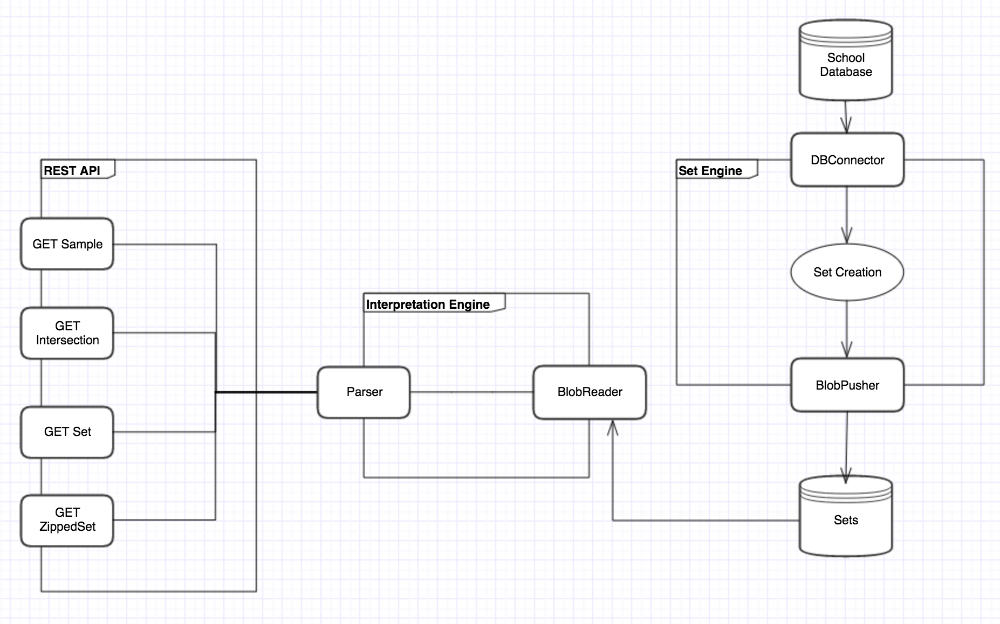
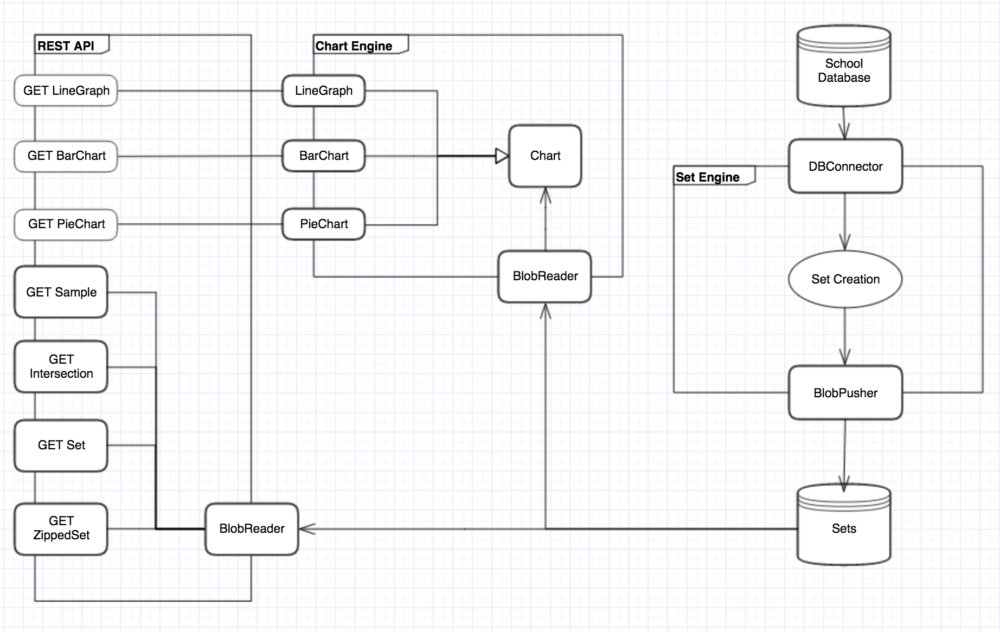
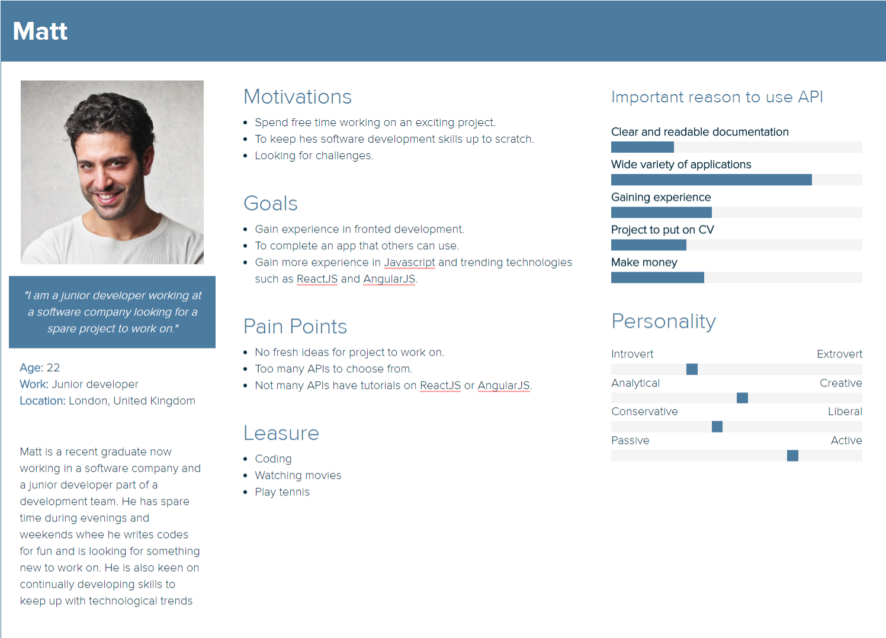
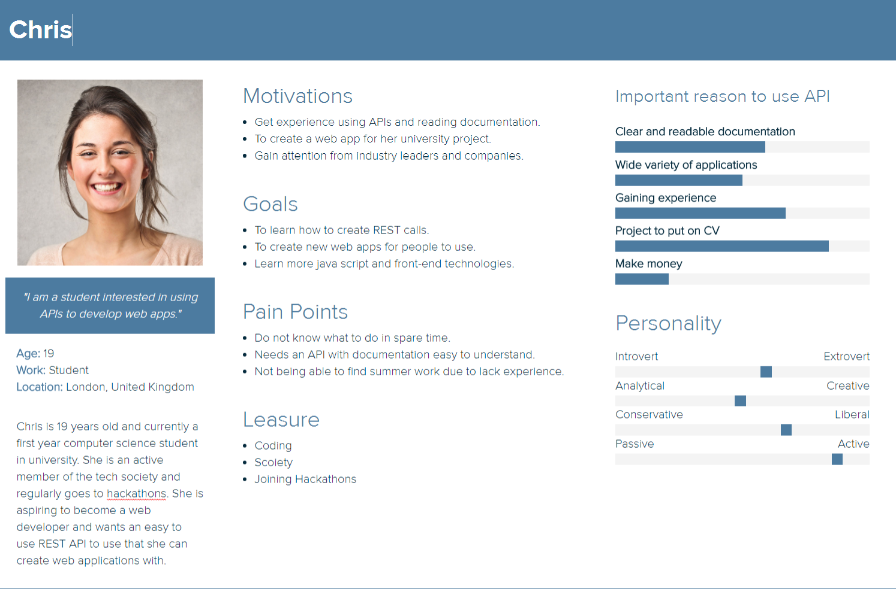

Gathering Requirements
Most of the requirements are from our clients, Capita, since they made the previous version of their data engine and want to improve it.
They collect feedback from their users(mostly schools that use their products), and provide them to us.
Initial Requirements

Final Requirements

MoSCoW List
| Must Have | 1. Show different methods for achieving the desired results(i.e. getting subsets of the database). 2. Perform experiments to provide an inside into each method's performance. |
| Should Have | 1. Create a prototype which connects to Team 1's front end to perform basic operations. |
| Could Have | 1. A full-featured API which could then be used between any database and visualisation tool. |
| Would Have | 1. |
Persona
Persona 1
Persona 2
